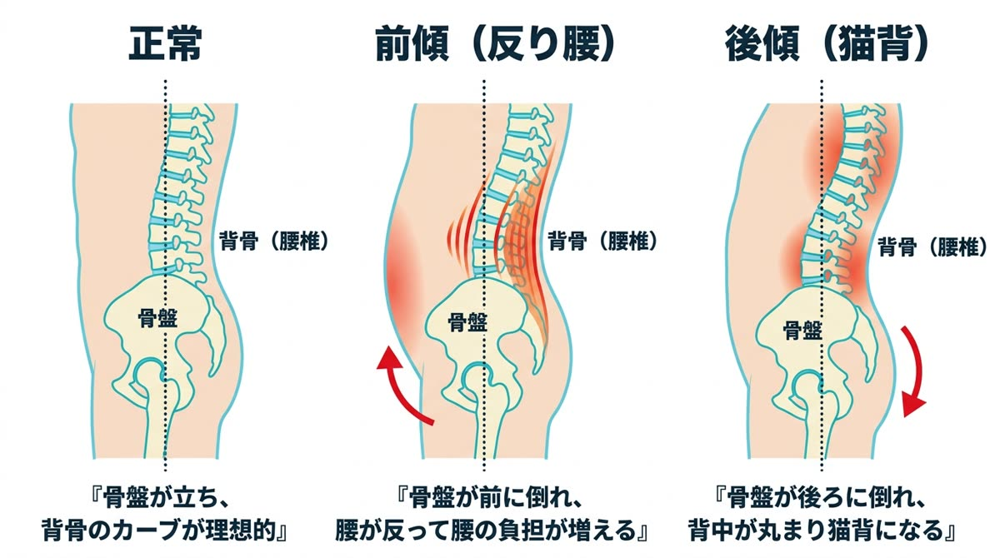

骨盤は、家でいえば「基礎」。ここが傾けば、その上に建つ背骨も、肩も、首も、すべてが傾きます。当院がすべての施術で骨盤を重視する理由です。
これらに共通する根っこが、骨盤の歪みです。「痛い場所」と「原因の場所」は違う——これが、当院が施術で最も大切にしている考え方です。
骨盤は上半身と下半身をつなぐ、身体の中心です。ここが傾いたりねじれたりすると、バランスを取るために背骨が曲がり、筋肉の一部に負担が集中します。その結果として現れるのが——
一見バラバラに見えるこれらの症状が、「土台の傾き」というひとつの原因でつながっているケースが非常に多いのです。
骨盤の歪みは、特別な事故やケガではなく毎日の何気ないクセの積み重ねで起こります。脚を組む、片足に体重をかけて立つ、横座りをする、長時間の運転やデスクワーク、産後の骨盤の緩み、運動不足による筋力低下——。
骨盤を正しい位置に保つのは周囲の筋肉の仕事です。クセで一方向に引っ張られ続けた筋肉はその形で固まり、「歪んだ状態がその人の普通」になってしまいます。だからこそ、意識だけでは戻せないのです。


骨盤だけをバキッと動かして終わり、という施術は行いません。①まず姿勢分析であなたの骨盤がどの方向に・どれくらい歪んでいるかを確認し、②骨盤を引っ張っている硬くなった筋肉を先にゆるめ、③そのうえで関節を正しい位置へ矯正します。最後に④正しい位置をキープするための座り方・セルフケアをお伝えして、「戻らない骨盤」を育てるところまでが当院の骨盤矯正です。

症状・生活習慣・座り方のクセなどを丁寧にヒアリング。骨盤を歪ませている「犯人」を一緒に探します。

骨盤の傾き（前傾・後傾）、左右差、ねじれをチェックし、画像を使ってわかりやすくご説明します。

筋肉をゆるめてから骨盤を矯正。施術後の変化を確認し、正しい位置を保つためのセルフケアと通院プランをご提案します。
当院の骨盤矯正は、筋肉をゆるめてから関節を正しい位置へ導くソフトな矯正が基本です。ボキボキ整体はご希望の方のみに行うオプションですので、苦手な方も安心してお越しください。
1回でも変化は感じられますが、骨盤は日々のクセで元に戻ろうとします。初期は週1回程度の矯正で正しい位置を身体に覚えさせ、その後メンテナンスへ移行するのが定着への近道です。
もちろんです。骨盤の歪みは性別に関係なく、デスクワークや立ち仕事の男性にも多く見られます。腰痛・姿勢改善目的の男性のお客様も多数お越しいただいています。